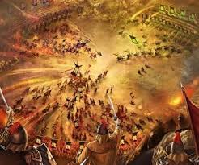
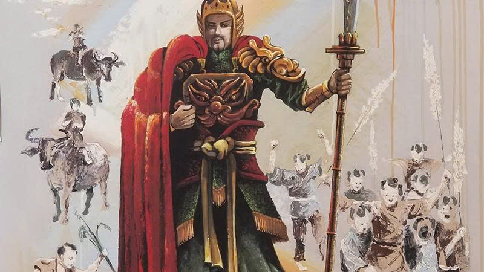
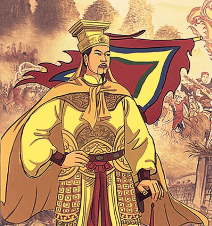
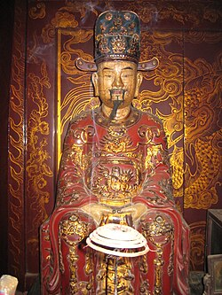
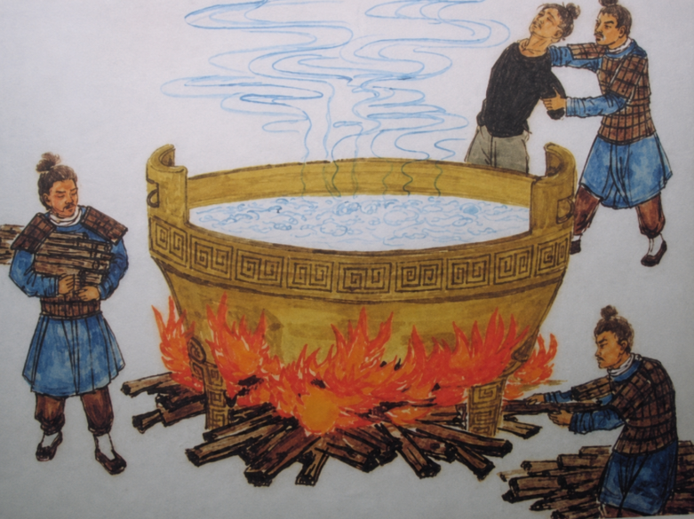
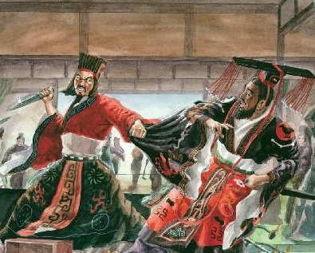

👑
Sử Việt Tương Tác
ĐINH BỘ LĨNH
Từ Cờ Lau Đến Đế Vương
Từ Cờ Lau Đến Đế Vương
Năm ~924 — 979 · Đinh Tiên Hoàng Đế
Ngươi là Đinh Bộ Lĩnh — cậu bé chăn trâu đất Hoa Lư dấy nghiệp dẹp loạn 12 sứ quân, thống nhất giang sơn sau 25 năm cát cứ, lập nên Đại Cồ Việt — nhà nước phong kiến độc lập đầu tiên của Việt Nam. Một hành trình 9 chương về ý chí, mưu lược và khát vọng đế vương.
👑 9 chương
🎓 Kiến thức + Thử thách
📖 Có nguồn tham khảo
▾ hoặc cuộn xuống
🌾 Chương 1 · ~924–944 — Cậu Bé Cờ Lau
📚 Bối cảnh lịch sử
Năm 938: Ngô Quyền đánh bại quân Nam Hán trên sông Bạch Đằng — Việt Nam thoát Bắc thuộc sau 1000 năm. Nhưng năm 944, Ngô Quyền mất — đất nước lập tức rơi vào Loạn 12 Sứ Quân, cát cứ hơn 20 năm.
Ngươi là Đinh Bộ Lĩnh — sinh ra ở vùng núi Hoa Lư, Ninh Bình. Cha là nha tướng của Ngô Quyền, mất sớm. Mẹ tần tảo nuôi con. Từ nhỏ, ngươi đã khác thường — không chịu ngồi yên, không thích phục tùng.
Những buổi chiều chăn trâu trên đồng Hoa Lư, ngươi bẻ bông lau làm cờ hiệu, sai lũ bạn chắp tay đứng hai hàng, tập trận giả. Lũ trẻ chẳng hiểu sao lại nghe lời ngươi — nhưng chúng nghe. Đó là thiên phú lãnh đạo không ai dạy được.
Người mẹ — nhìn con với ánh mắt vừa lo vừa tự hào
"Bộ Lĩnh ơi, con không lo chăn trâu mà cứ tập trận mãi. Nhưng mẹ thấy... con có cái gì đó rất khác. Cái gì đó lớn hơn đám trẻ chăn trâu này nhiều lắm..."
🎓 Kiểm tra kiến thức khởi đầu
Đinh Bộ Lĩnh là người khai sáng triều đại nào trong lịch sử Việt Nam?
⚡ Khi bạn bè hỏi tại sao cứ tập trận giả, bạn trả lời...
⭐ Lựa chọn A · Thiên Mệnh Đế Vương
Đây chính là Đinh Bộ Lĩnh trong lịch sử! Đại Việt Sử Ký Toàn Thư chép: "Đinh Bộ Lĩnh hồi nhỏ thường cùng bọn trẻ chăn trâu, bắt bọn trẻ chắp tay làm hầu hai bên, rồi lấy bông lau làm cờ tập trận giả." — Trò chơi thuở nhỏ trở thành trường luyện đế vương!
📖 Sự thật lịch sử
Đinh Bộ Lĩnh sinh khoảng năm 924 tại Hoa Lư (Ninh Bình). Cha là Đinh Công Trứ — nha tướng của Dương Đình Nghệ và sau là của Ngô Quyền. Khi cha mất, cậu bé Bộ Lĩnh ở với chú ruột, lớn lên trong vùng núi hiểm trở Hoa Lư — chính địa thế này sau này sẽ trở thành kinh đô bất khả xâm phạm.
🏔️ Hoa Lư núi non
🌾 Cờ lau tập trận
⚔️ Năm ~924
⚡ Tiếp tục hành trình...
📍 Lựa chọn B · Bỏ Lỡ Thiên Mệnh
Đinh Bộ Lĩnh không bao giờ từ bỏ! Chính những buổi tập luyện không ngừng từ nhỏ đã tôi luyện nên vị hoàng đế tương lai. Không có ý chí — không có thiên mệnh.
⚡ Thử lại với khí phách hơn...
📍 Lựa chọn C · Tầm Nhìn Chưa Đủ Lớn
Tốt lòng — nhưng Đinh Bộ Lĩnh hướng đến điều lớn hơn cả dân làng. Khi đất nước tan vỡ, chỉ bảo vệ một góc nhỏ thôi chưa đủ. Cần một người dám gánh cả giang sơn!
⚡ Mở rộng tầm nhìn...
⛵ Chương 2 · ~944–950 — Nương Nhờ Trần Minh Công

📚 Bước ngoặt bắt buộc
Thấy cháu ngày càng có uy tín và lực lượng riêng, người chú nuôi dưỡng Bộ Lĩnh sinh nghi kỵ, trở mặt. Đinh Bộ Lĩnh buộc phải dẫn con trai Đinh Liễn cùng thân tín rời Hoa Lư.
Ngươi tìm đến Trần Minh Công (Trần Lãm) — một sứ quân có thế lực đang trấn giữ vùng Bố Hải Khẩu (Thái Bình ngày nay). Ông đã già, các con không đủ tài gánh vác cơ nghiệp.
Trần Minh Công — khi mới gặp Đinh Bộ Lĩnh
"Ta đã già, các con ta đều không đủ tài để gánh vác cơ nghiệp này. Nhìn ngươi, ta thấy có khí chất của kẻ làm chủ chứ không phải kẻ làm tôi."
📖 Bước đi khôn ngoan
Trần Minh Công trọng dụng, giao binh quyền cho Đinh Bộ Lĩnh — coi như người kế tục sự nghiệp. Đây không phải hèn kém mà là bước đi chiến lược: tích lũy binh lực từ bên trong trước khi tách ra hành động độc lập, thay vì đối đầu ngay từ đầu với hàng chục sứ quân khác.
🎓 Kiểm tra kiến thức
Trước khi tự gây dựng lực lượng riêng, Đinh Bộ Lĩnh từng nương nhờ và phục vụ dưới trướng ai?
⚡ Khi Trần Minh Công trao binh quyền, bạn sẽ...
⭐ Lựa chọn A · Tích Lũy Khôn Ngoan
Đây là bước đi thực tế đã xảy ra! Dưới trướng Trần Minh Công, Đinh Bộ Lĩnh được trao binh quyền, từng bước xây dựng uy tín và lực lượng riêng — nền móng cho cơ nghiệp sau này.
💡 Bước ngoặtSau khi Trần Minh Công qua đời, Đinh Bộ Lĩnh mang theo lực lượng đã gây dựng được, đưa Đinh Liễn cùng thân tín quay trở về Hoa Lư — nơi ông am hiểu địa thế hơn ai hết — để gây dựng cơ nghiệp riêng.
⚡ Tiếp tục...
📍 Lựa chọn B · Quá Vội Vàng
Với lực lượng còn quá nhỏ, xưng hùng ngay lập tức là con đường dẫn đến diệt vong nhanh chóng trước các sứ quân đã có căn cứ vững chắc. Đinh Bộ Lĩnh trong lịch sử chọn con đường tích lũy trước.
⚡ Học cách kiên nhẫn...
🏔️ Chương 3 · ~951–960 — Về Hoa Lư, Dựng Cờ Riêng
🏔️ Địa thế Hoa Lư
Hoa Lư được bao bọc bởi những dãy núi đá vôi trùng điệp, sông suối chằng chịt — một "thành lũy tự nhiên" mà không kinh đô đồng bằng nào sánh được.
Trở về quê hương, Đinh Bộ Lĩnh nhanh chóng thu phục được hai nhân vật sẽ trở thành cánh tay phải đắc lực nhất đời mình: Nguyễn Bặc và Đinh Điền. Quân đội ngày một đông, danh tiếng "người đứng đầu Hoa Lư" lan xa.
Nguyễn Bặc — bái kiến Đinh Bộ Lĩnh
"Chúa công, chúng tôi theo người không phải vì người có nhiều quân nhất trong 12 sứ quân — mà vì người là kẻ duy nhất dám nói thẳng: sẽ dẹp hết loạn lạc này, không chia phần, không thỏa hiệp nửa vời."
🎓 Kiểm tra kiến thức
Hai vị tướng nào gắn bó và trung thành với Đinh Bộ Lĩnh ngay từ những ngày đầu gây dựng lực lượng ở Hoa Lư?
⚡ Chọn nơi đặt căn cứ...
⭐ Lựa chọn A · Lợi Thế Địa Hình
Chính xác! Hoa Lư trở thành căn cứ bất khả xâm phạm trong suốt những năm chinh chiến — và sau này còn được chọn làm kinh đô đầu tiên của nhà nước phong kiến độc lập Việt Nam.
💡 Tầm nhìn xaQuyết định này không chỉ phục vụ mục tiêu phòng thủ trước mắt, mà còn đặt nền móng lâu dài: nhiều năm sau, Hoa Lư chính thức trở thành kinh đô của Đại Cồ Việt.
⚡ Tiếp tục...
📍 Lựa chọn B · Rủi Ro Phòng Thủ
Đồng bằng trù phú dễ bị các sứ quân mạnh hơn nhòm ngó, tấn công trực diện. Đinh Bộ Lĩnh trong lịch sử giữ vững Hoa Lư suốt cuộc chinh chiến — sự an toàn ấy giúp ông rảnh tay tính kế đánh dẹp từng sứ quân một.
⚡ Giữ vững căn cứ...
⚔️ Chương 4 · Năm 944–965 — Dẹp Loạn 12 Sứ Quân
Cửa Ải Chiến Trường
Trước khi ra trận, một vị chủ tướng phải thấu hiểu thế cục. Trả lời đúng 3 câu hỏi liên tiếp về 12 sứ quân để dẫn quân vào chương này!
⚔️ Cần đúng 3/3 — Sai quá 1 lần sẽ bị trừ điểm!
🗡 Câu 1/3 — Bối Cảnh
Loạn 12 Sứ Quân xảy ra sau sự kiện gì khiến đất nước mất chỗ dựa?

⚔️ 12 Sứ Quân
12 thủ lĩnh chiếm giữ các vùng: Ngô Xương Xí (Bình Kiều), Kiều Công Hãn (Phong Châu), Nguyễn Khoan (Tam Đới)... Họ liên tục đánh nhau. Dân lầm than gần 25 năm.
Ngươi đã trưởng thành. Căn cứ Hoa Lư ngày càng lớn mạnh. Đinh Điền và Nguyễn Bặc — hai tướng tài nhất — đứng trước mặt ngươi với bản đồ 12 sứ quân trải ra trên bàn đá.
Nguyễn Bặc — tướng lĩnh tài ba
"Chúa công, 12 sứ quân không đều sức. Có kẻ chỉ giữ một huyện nhỏ, có kẻ hùng cứ một phủ lớn. Nếu ta biết chọn thứ tự tấn công đúng đắn, ta đủ sức thống nhất giang sơn. Sai — ta sẽ bị kéo vào chiến tranh kiệt sức."
Thử Thách Sắp Xếp — Kế Hoạch Dẹp Loạn
Hãy sắp xếp đúng thứ tự chiến lược mà Đinh Bộ Lĩnh đã dùng để dẹp 12 sứ quân. Kéo thả các bước vào đúng vị trí!
🗺️ Sắp xếp đúng 4 bước chiến lược
📋 Kéo thả để sắp xếp thứ tự đúng
≡Đánh các sứ quân nhỏ yếu, tích lũy lực lượng và danh tiếng
≡Ngô Xương Xí — sứ quân cuối cùng — chịu đầu hàng năm 966
≡Xây dựng căn cứ vững chắc ở Hoa Lư, huấn luyện quân đội
≡Gửi sứ chiêu hàng các sứ quân mạnh, cô lập kẻ ngoan cố
🎓 Kiểm tra kiến thức
Đinh Bộ Lĩnh dẹp xong 12 sứ quân sau bao nhiêu năm chinh chiến?
📖 Chiến thắng vang dội
Đinh Bộ Lĩnh không chỉ dùng vũ lực — ngài chiêu dụ và trọng dụng những người chịu quy phục. Phạm Bạch Hổ — một trong 12 sứ quân — sau khi hàng phục được phong tước cao, trở thành tướng trung thành. Đây là nghệ thuật "thu phục nhân tâm" của bậc đế vương.
⚡ Khi một sứ quân yếu chủ động xin hàng, bạn sẽ...
⭐ Lựa chọn A · Thu Phục Nhân Tâm

Xuất sắc! Đây là bí quyết thành công của Đinh Bộ Lĩnh. Thay vì tiêu diệt tất cả, ngài chuyển thù thành bạn — tạo ra một tập thể đoàn kết đa dạng.
📖 Tư liệuSau khi dẹp yên, Đinh Bộ Lĩnh trọng dụng nhiều người từng là sứ quân đối thủ. Phạm Bạch Hổ được phong "Thân Vệ Đại Tướng Quân". Sự bao dung này khiến tất cả các cựu sứ quân đều trung thành với triều Đinh.
⚡ Tiếp tục...
📍 Lựa chọn B · Nghi Kỵ Quá Mức
Không tin ai thì không ai theo. Đinh Bộ Lĩnh biết cách đọc lòng người — và khi họ đã thực lòng quy phục, ngài mở lòng đón nhận.
⚡ Học cách bao dung...
📍 Lựa chọn C · Thận Trọng Có Lý
Thận trọng là tốt, nhưng người xin quy phục đã hạ vũ khí — đó là tín hiệu rõ ràng nhất. Đinh Bộ Lĩnh quyết đoán tiếp nhận ngay để củng cố thế lực.
⚡ Quyết đoán hơn...
🏯 Chương 5 · Năm 966 — Thống Nhất Giang Sơn
Thử Thách Nối Đôi — Sứ Quân & Lãnh Địa
Một vị vua phải biết đất nước của mình! Hãy nối đúng 5 cặp Sứ Quân — Vùng Đất để bước vào ngày thống nhất lịch sử!
🔗 Nối đúng ít nhất 4/5 cặp để mở cổng
🗺️ Nhấp vào cột trái rồi cột phải để nối
Kiều Công Hãn
Nguyễn Khoan
Phạm Bạch Hổ
Ngô Xương Xí
Trần Lãm
Đằng Châu
Phong Châu
Bố Hải Khẩu
Bình Kiều
Tam Đới

🏆 Ý nghĩa lịch sử
Năm 966: lần đầu tiên sau 25 năm loạn lạc, cả đất nước về một mối. Đây là tiền đề để xây dựng nhà nước độc lập có chủ quyền đầu tiên của Việt Nam sau thời kỳ Bắc thuộc.
Ngô Xương Xí — sứ quân cuối cùng — cúi đầu quy phục. Ba quân hò reo. Hơn 20 năm chinh chiến kết thúc. Các tướng lĩnh quây quanh ngươi, mắt sáng ngời, chờ ngươi tuyên bố điều quan trọng nhất.
Đinh Điền — cố vấn thân cận nhất
"Chúa công ơi! Giang sơn đã về một mối! Trăm họ trông chờ người cứu vớt bấy lâu nay."
🎓 Kiểm tra kiến thức
Đất nước bị chia thành 12 sứ quân cát cứ trong khoảng thời gian nào trước khi được thống nhất?
⚡ Tiếp tục...
👑 Chương 6 · Năm 968 — Lập Nước Đại Cồ Việt
👑 Bước ngoặt 968
Sau khi thống nhất, các tướng lĩnh thúc giục Đinh Bộ Lĩnh chính thức xưng vương, lập quốc hiệu để thiên hạ có chỗ quy về.
Đinh Điền tâu: "Đã đến lúc chúa công xưng vương, định đặt tên nước, xây dựng triều đình để muôn dân có chốn nương tựa! Không thể chần chừ thêm nữa!"
✍️ Thử thách điền vào chỗ trống
Đinh Bộ Lĩnh lên ngôi năm ___, đặt tên nước là ___, đóng đô tại ___.
🎓 Kiểm tra kiến thức
Vì sao Đinh Bộ Lĩnh chọn Hoa Lư làm kinh đô thay vì chọn vùng đồng bằng thuận lợi hơn?
⚡ Trước khi lên ngôi, điều quan trọng nhất bạn muốn công bố...
⭐ Lựa chọn A · Độc Lập Tự Chủ!

Tinh thần đế vương! Đinh Bộ Lĩnh không xin phép ai. Ngài tự xưng Hoàng Đế — không phải "vương" hay "thần tử" — khẳng định Đại Cồ Việt ngang hàng với Trung Hoa về địa vị.
📖 Sự kiện lịch sửĐinh Bộ Lĩnh tự xưng "Đại Thắng Minh Hoàng Đế" — dùng tước hiệu Hoàng Đế, không phải Quốc Vương. Sau đó ông mới sai sứ sang Tống để duy trì quan hệ hòa hiếu.
⚡ Tiếp tục...
📍 Lựa chọn B
Đinh Bộ Lĩnh không xin phép nhà Tống — ngài tự xưng Hoàng Đế trước, rồi mới cử sứ sang Tống để thiết lập quan hệ. Độc lập không chờ ai cho phép.
⚡ Khí phách tự chủ...
📍 Lựa chọn C
Lễ nghĩa quan trọng, nhưng tuyên bố chính trị phải đến trước. Đinh Bộ Lĩnh xưng đế ngay — cúng tế sau.
⚡ Xác lập vị thế trước...
🏛️ Chương 7 · Năm 968–979 — Xây Dựng Đại Cồ Việt
Thử Thách Kinh Bang Tế Thế
Trị quốc khó hơn đánh trận. Trả lời đúng 4 câu hỏi liên tiếp về việc xây dựng nhà nước. Mỗi câu sai bị trừ 3 điểm.
🏛️ Cần đúng ít nhất 3/4 — Sai sẽ bị trừ điểm!
🏛️ Câu 1/4 — Niên Hiệu
Đinh Bộ Lĩnh đặt niên hiệu gì khi lên ngôi — niên hiệu đầu tiên của nhà nước phong kiến độc lập Việt Nam?

🏛️ Nhà nước mới
Đinh Tiên Hoàng xây dựng bộ máy nhà nước đầu tiên: chia đất thành đạo, lộ, phủ, châu, huyện — đặt quan cai trị từ trung ương đến địa phương.
Ngươi ngồi trên ngai vàng tại Hoa Lư, mặc long bào vàng óng ánh. Trước mặt là triều đình mới — những khuôn mặt hôm qua còn là kẻ thù, hôm nay đứng chắp tay trung thành.
Ngô Tử An — quan văn tài giỏi
"Tâu Hoàng Thượng! Nhà nước mới cần bốn điều: một là luật pháp nghiêm minh, hai là quân đội chính quy có kỷ luật, ba là ngoại giao khéo léo với nhà Tống, bốn là kinh tế dân no. Xin Hoàng Thượng cho biết ưu tiên hàng đầu?"
🎓 Kiểm tra kiến thức
Đinh Tiên Hoàng phong cho ai làm Thập Đạo Tướng Quân — người thứ hai trong triều, chỉ sau Hoàng Đế?
"Ta từ cậu bé chăn trâu, lấy bông lau làm cờ — đến hôm nay dựng nên một đế quốc. Không phải vì ta tài hơn ai — mà vì ta không bao giờ chấp nhận số phận nhỏ bé mà người đời muốn vạch ra cho ta."
— Đinh Tiên Hoàng Đế · Hoa Lư, 968
— Đinh Tiên Hoàng Đế · Hoa Lư, 968
⚡ Việc đầu tiên bạn làm sau khi lên ngôi là...
⭐ Lựa chọn A · Nền Tảng Pháp Luật

Đây chính là Đinh Tiên Hoàng! Ngài đặt vạc dầu và cũi hổ nơi công cộng, ra chiếu: "Ai phạm pháp sẽ bị luộc hoặc bị hổ ăn thịt." Chỉ một câu — đất nước từ loạn lạc bước sang trật tự.
📖 Lịch sử ghi chépSử chép không ai dám vi phạm pháp luật của Đinh Tiên Hoàng. Đồng thời ngài ra lệnh thả toàn bộ cửa ngõ ra vào, không cần đặt vệ binh gác — người dân tự giác tuân thủ trật tự.
⚡ Tiếp tục...
📍 Lựa chọn B
Ngoại giao quan trọng nhưng nội lực phải đến trước. Đinh Tiên Hoàng xây dựng pháp luật vững chắc trước, rồi mới cử sứ sang Tống.
⚡ Nội trị trước...
📍 Lựa chọn C
Phong thưởng là cần thiết nhưng chưa đủ. Không có pháp luật, thưởng phạt chỉ là dùng tình cảm — không bền.
⚡ Cần cả hệ thống...
🌙 Chương 8 · Năm 979 — Bi Kịch Trong Đêm

📚 Bối cảnh
Trước đó, Đinh Tiên Hoàng đã lập con út Đinh Hạng Lang (còn nhỏ tuổi) làm Thái tử thay vì con trưởng Đinh Liễn — người từng vào sinh ra tử cùng cha suốt cuộc chinh chiến. Quyết định này gieo mầm bất mãn trong triều.
Đêm năm 979, sau một buổi yến tiệc, Đinh Tiên Hoàng say rượu ngủ lại trong sân điện. Một viên hoạn quan tên Đỗ Thích — theo dân gian kể lại vì nằm mộng thấy điềm lạ nên tin mình có mệnh làm vua — đã lẻn vào sát hại cả vua và Nam Việt Vương Đinh Liễn ngay trong đêm.
Tin dữ truyền đến triều đình sáng hôm sau
"Bệ hạ... Bệ hạ và Nam Việt Vương đều đã... đều đã bị hại trong đêm qua rồi!"
🎓 Kiểm tra kiến thức
Đinh Tiên Hoàng và con trai nào cùng bị sát hại trong biến cố năm 979?
📖 Hậu quả ngay sau đó
Đỗ Thích trốn trên nóc điện suốt mấy ngày, sau bị phát hiện và bị giết ngay tại chỗ. Con nhỏ Đinh Toàn (6 tuổi) được đưa lên ngôi trên danh nghĩa, nhưng thực quyền nhanh chóng rơi vào tay Lê Hoàn.
⚡ Tiếp tục...
🏆 Chương 9 · Di Sản Ngàn Năm
Thử Thách Tổng Kết — Vòng Phán Xét Lịch Sử
Đây là cửa ải cuối cùng và khó nhất. Bốn câu hỏi tổng hợp về toàn bộ cuộc đời Đinh Tiên Hoàng. Mỗi câu sai trừ 5 điểm, mỗi câu đúng +12 điểm. Cần đúng ít nhất 3/4 để mở chương cuối!
🏆 3/4 đúng — Câu sai trừ 5 điểm!
🏆 Câu 1/4 — Kế Thừa
Sau khi Đinh Tiên Hoàng mất, ai thực sự nắm quyền kiểm soát đất nước trước khi lên ngôi lập triều đại mới?
🕯️ Nhìn lại
Nhà Đinh chỉ tồn tại 12 năm (968–980) — ngắn ngủi so với nhiều triều đại sau. Nhưng mô hình nhà nước mà Đinh Tiên Hoàng đặt ra lại tồn tại gần một nghìn năm sau đó.
Chỉ hơn 10 năm trị vì — nhưng Đinh Tiên Hoàng đã làm được điều kỳ diệu: từ một cậu bé chăn trâu không cha, trở thành người thống nhất đất nước sau 25 năm loạn lạc, xây dựng nhà nước phong kiến độc lập đầu tiên, đặt nền tảng cho cả nghìn năm lịch sử tiếp theo.
"Từ bông lau cờ hiệu — đến cờ vàng đế vương. Từ đứa trẻ không cha chăn trâu ở Hoa Lư — đến Hoàng Đế đầu tiên đặt nền móng cho ngàn năm độc lập của dân tộc Việt."
⚡ Di sản nào của Đinh Tiên Hoàng bạn coi là vĩ đại nhất?
Đúng — nhưng chỉ một phần! Thống nhất là điều kiện cần, nhưng việc xây dựng nhà nước độc lập có hệ thống mới là di sản bất tử.
⚡ Nhìn toàn diện hơn...
Xuất sắc — nhưng còn thiếu! Bên cạnh việc lập Đại Cồ Việt, mô hình nhà nước và tinh thần độc lập tự chủ mà Đinh Tiên Hoàng tạo dựng đã nuôi dưỡng cả nghìn năm lịch sử tiếp theo.
⚡ Nhìn toàn diện hơn...
👑
Hành Trình Hoàn Thành!
0
—
...
📚 Ba Bài Học Ngàn Năm Từ Đinh Bộ Lĩnh
1. Tài năng lãnh đạo được rèn giũa từ sớm: Bông lau làm cờ không phải trò chơi — đó là trường luyện đế vương.
2. Kiên nhẫn chiến lược hơn dũng cảm liều lĩnh: Nương nhờ người khác để tích lũy lực lượng, rồi dẹp từng sứ quân một — không hấp tấp, không đánh dàn trải.
3. Thống nhất rồi phải xây dựng: Thắng trận chưa đủ — Đinh Tiên Hoàng xây dựng nhà nước có luật pháp, có ngoại giao, có tổ chức. Di sản đó tồn tại nghìn năm sau khi ngài đã mất.
2. Kiên nhẫn chiến lược hơn dũng cảm liều lĩnh: Nương nhờ người khác để tích lũy lực lượng, rồi dẹp từng sứ quân một — không hấp tấp, không đánh dàn trải.
3. Thống nhất rồi phải xây dựng: Thắng trận chưa đủ — Đinh Tiên Hoàng xây dựng nhà nước có luật pháp, có ngoại giao, có tổ chức. Di sản đó tồn tại nghìn năm sau khi ngài đã mất.